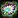
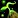
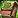
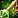
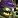
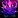
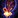

This guide will walk you through the various Herbalism specialization paths in War Within, helping you maximize your efficiency as an herbalist.
War Within introduces three Herbalism specializations, unlocked at levels 25, 50, and 75.
In this guide, we'll take an in-depth look at each specialization, highlighting the best places to invest your points and which paths you might want to avoid. I'll break down every specialization and sub-specialization, and provide you with example builds to get you started. If you're playing Midnight, I have a separate Midnight Herbalism Specialization Guide.
Table of contents
#Bountiful Harvests
 Bountiful Harvests is where you'll gain most of your extra skill in Herbalism. The center node provides a +55 skill boost to all herbs and unlocks the ability to refine Quality 1 (Q1) herbs into Q2, and Quality 2 into Q3 for all types of herbs.
Bountiful Harvests is where you'll gain most of your extra skill in Herbalism. The center node provides a +55 skill boost to all herbs and unlocks the ability to refine Quality 1 (Q1) herbs into Q2, and Quality 2 into Q3 for all types of herbs.
This is the first specialization I plan to max out. When Dragonflight launched, those with Q3 raw materials made a significant profit, and it seems like the demand for Q3 materials will be even higher in War Within. Crafters will need Q3 materials to guarantee Q5 items if they don't want to rely on concentration.
Subspecialization
Each subspecialization under Bountiful Harvests will boost your skill with that specific herb, increase your finesse procs to gather more herbs, and improve your chances of collecting Null Lotus more frequently.
#Botany

Learning Botany will give you the passive ability to replenish 1 Vigor from gathering herbs. You don't have to spend any points into it to get this bonus, you will get it from just unlocking the specialization. For this reason, you should always unlock Botany as your first specialization. The vigor you gain from gathering is essential for minimizing downtime. Without it, you'll find yourself grounded often, waiting for vigor to replenish.
Cultivation

This spec sounds very good on paper, but unfortunately the drop rate of elemental seeds is very low. They can only drop when gathering elemental herbs, so you won't get many of them. There is a little farm in Hallowfall where you can plant these seeds, and it seemed to me that the soil respawn rate was fast enough that you can plant your seeds without downtime, but I was the only one there, so I'm not sure how it will function on live.
Not a bad spec, but don't think it's a high priority to put points into this unless Null Lotus will be very expensive and you'd want the extra perception.
Mulching
Unless this spec is adjusted, it's not worth investing in. I'd recommend avoiding this one altogether.

As for Green Thumb that you get by spending 10 points, it's basically just doubles your herb gathered on your next pick. It has 1 hour CD, and there is no way to lower cooldown unlike overloading. Mulch also seems pretty bad, even the highest level Empowered Mulch only give 5% finesse for a single herb gather. It's just absurd how little it gives for much it costs.
#Overloading the Underground
Overloading the Underground gives +40 skill to gathering Empowered herbs nodes and you will get more CD reduction on your overload ability. You will also gain one additional charge ofThe cooldown reduction is very minor. It's around 15% if you max out the tree. It goes from 30 minutes to 34, so you only have to gather 21 herbs instead of 24 to fully reset the cooldown.
You would mostly want spend points here for the extra charge of  Overload Empowered Herb. With two charges you have more time to look for more valuable elemental nodes without wasting a lot of cooldown reduction while you try to find the right herb.
Overload Empowered Herb. With two charges you have more time to look for more valuable elemental nodes without wasting a lot of cooldown reduction while you try to find the right herb.
Subspecializations
Each subspecialization give you extra skill and some extra cooldown reduction when picking these specific herbs. The cooldown reduction is 42 minutes instead of 30 (not all herbs, only these empowered)
Note that only Crystallized and Altered nodes will give you extra elemental reagents. The other two nodes won't provide any extra elemental reagents.
Crystallized
You will go from not getting any  Crystalline Powder from overloading to getting 1-3x.
Crystalline Powder from overloading to getting 1-3x.
Altered
You can loot a few extra  Writhing Sample
Writhing Sample
Sporefused
Spending 40 points into this will give you the same buff that 
Irradiated
Overloading these temporarily transform your Overload Empowered Herb ability into Arcane Duplication. Arcane Duplication will allow you to create a gatherable copy of a herb. This copy is always a normal herb even if you use it on another empowered herb. When you max out this subspec, your Arcane Duplication ability will create an additional herb. This can be useful if one herb becomes much more expensive than the rest.
Recommended Specialization Build
Now let's see step by step how you should spend your points. I'll outline an example build with some alternative path here and there.
First 40 points
If you have the ability to gather while mounted (  Bountiful Harvests (40).
Bountiful Harvests (40).
If you don't have a Sky Golem or a Druid, you should consider getting the mount or leveling a Druid alt specifically for gathering. Druids have a significant advantage over other classes because they can gather herbs while mounted by default, and their instant flight form allows for quick and efficient Mining. With double gathering, you can collect far more herbs and ores as a Druid.
If you don't want to do any of these, then you can go for Botany (40) first to unlock mounted gathering and then max out  Bountiful Harvests (40).
Bountiful Harvests (40).
Next 40-120 points
In Dragonflight, you eventually stopped receiving Q1 herbs, but that's not the case in War Within. Even with everything maxed, you'll still get Q1 materials. Because of this, the supply of Q3 materials is likely to be lower, making them more expensive. That's why I believe focusing on +skill first might be the best strategy. You will have an increased chance of gathering Q3 herbs, which will be in higher demand.
Bountiful Harvest subspecializations
I would focus investing points into the individual Herb subspecialization in  Bountiful Harvests. The last node in each subspecialization gives increased chance to get
Bountiful Harvests. The last node in each subspecialization gives increased chance to get
There are some herbs that won't grow in some zones, so if you have a favorite farming zone, you shouldn't put points into herbs that won't grow there. There are no Orbinid and Luredrop in Isle of Dorn and you won't find any 
Example builds
My build focuses on these two zones because they have fewer types of herbs, allowing me to reach max skill for every herb in the zone faster. Below are my two example build choices.
The herb order is not set in stone, I'll adjust based on herb prices.
| Isle of Dorn | Azj-Kahet |
|---|---|
|
|
Spending the Rest of your Points
Once you max out the three herbs, I'd start investing points into the other two specialization.
Max out Botany and Cultivation first. Depending on the price of Null Louts. Go for maxing out Cultivation first if Null Louts is going for high prices.
After this you can fill out the rest of the tree as you see fit. If you want to farm in other zones, just max out the rest of the herbs, or you can fill out the rest of the Empowered nodes.
That's pretty much it for now. I spent a lot of time farming herbs, so I hope this guide helps you out! Even if the only thing you take away is to avoid putting any points into Mulching, it's been worth it!